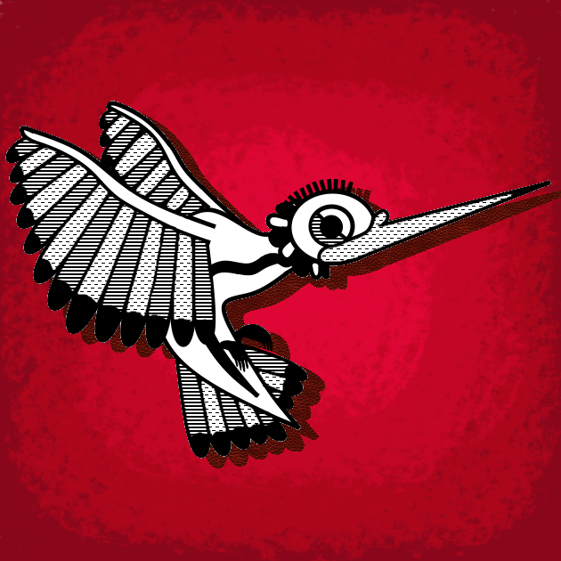

Textos Huitzitzilin
We as Mexican-Americans, what do we believe gives us value as a people? Us as a people in this world, israelites who followed a prophet; what prophet do we believe in? But I believe we lost sight of the prophet, and lost sight of the truth of our position. I learnt the truth about it, our place in this world at a place I refused to go. We all blinded by institutionalization, believing in a fight that in truth, is greater than we can consider. I think it is time we realize this fight isn’t against a group of people, a misunderstanding or a progression of peace, but a struggle for a unification of identity. Once we learn compassion, we can start to see the common enemy. Once we forget the differences between our own people, we can begin to see the bigger picture. Our schools painting us either black or white. Our communities lacking the passion to change something. The media commodifying our struggles and oppressions. A concha sandal won’t save you from the white man, an overpriced t-shirt with a comment on the back won’t free your momma. Our culture don’t mean shit if we still in chains. We have yet to do something, we lack the courage to defy our masters. It's a modern slavery, our people working in fields, our people working for the capitalist white man, our people constantly blinded by a fantasy dream that the white man dangles before us. We is Israelites, the true people of God, oppressed and defined by the minds of the white man. And yet, we still blame each other, we don’t trust each other, and sooner or later it won’t be the white man killing us, but another beaner killing another beaner. Stop tryin’ to be Mexican, stop tryin’ to be American; We our own people, our own culture, the product of an exodus that is destined to be a united people. We is Mexican-Americans, Chicanos who have gone long unchecked. ‘Bout time white people realize we ain’t playin’ no more. Unite as a people, unite with our central and south american brothers and sisters. Why is we all fightin’ against each other? Why is we allowing ourselves to fall into the white man’s trap? A culture can only go so far in this world, to be heard is to exist, and it's time we actually do something to be heard, whether the white man likes it or not.
Does life matter? I like to think it do. But, do it really? My faith in the shadows pulls me back, keeps me sane. But its all I got, a rubber band, elastic, but how far can it go until it implodes? My ego keeps me alive, my hatred and sin keeps me going. Thinking I can be forgiven, end up where I think is best, yet even I don’t know if it’s true. What do I want? Nothing, I don’t want nothing. Heard, never before, but it’s ok, pain is nothing. I got issues, I got problems, and it took me this long to figure that out. But what do I do with such a revelation? What do I do when I sit alone, with the voice of pain, the voice of grief, the voice of the choice. The choice to end, keeps me sane. Never believed it, never felt it, but always thought it. It’s an option, the final option. I can’t keep this promise, the promise that I’ll be alright, but I can try. But every day, waking up, every night, falling back, I’m never free from myself. And it’s frustrating, to be myself. But oh well, I was always born to be alone with myself, and I guess that’s ok.